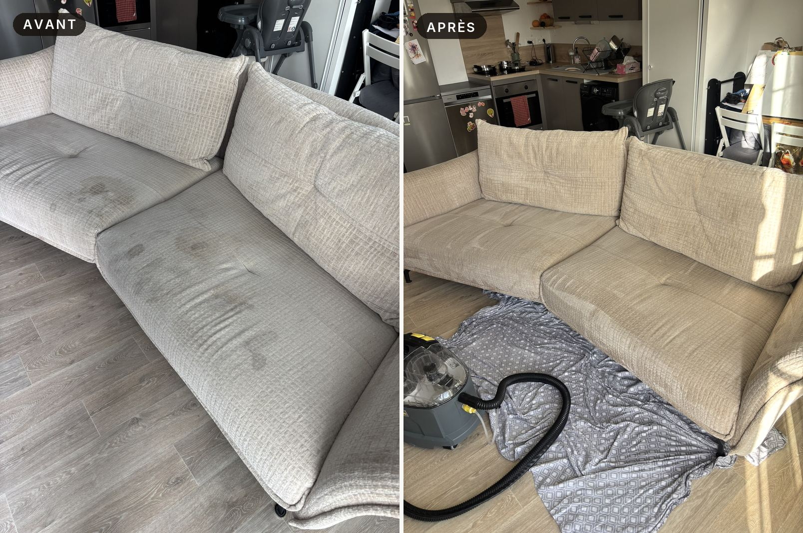
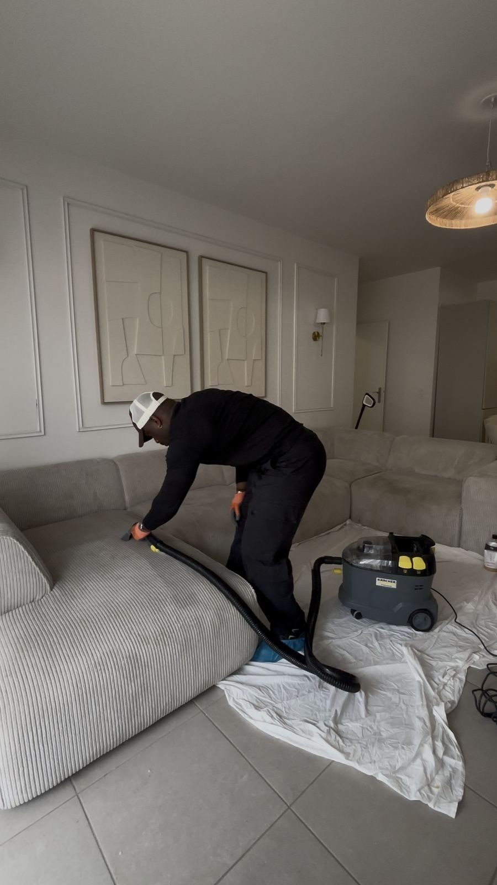

Vitres impeccables, canapés comme neufs.
Nettoyage de vitres, de canapés, de matelas et de tapis à domicile. Crédit d'impôt de 50 % pour les particuliers, dans le Val-d'Oise et toute l'Île-de-France.
Chez vous ou
dans vos locaux.
Deux métiers faits avec le même soin : le verre et le tissu. Du matériel professionnel, un devis ferme sous 24 h et un seul interlocuteur, Jensen.

Chez vous.
Canapé, matelas, tapis, sièges de voiture et vitres de votre maison ou de votre appartement. Ponctuel ou régulier.
À partir de 50 €**après crédit d'impôt de 50 %
Dans vos locaux.
Vitrines, bureaux, restaurants, hôtels et locations meublées. Passages planifiés hors horaires d'ouverture, même interlocuteur.
Quatre prestations,
un même niveau d'exigence.

Vitres
Fenêtres, baies, vérandas, abris de piscine et vitrines. Eau pure et raclette.

Canapé
Tissu, velours, microfibre. Taches, odeurs et poils d'animaux.

Matelas
Auréoles, transpiration, acariens. Désinfection comprise.

Tapis
Laine, synthétique, moquettes. Les couleurs d'origine ressortent.
Vous ne payez que la moitié.
Le nettoyage à domicile ouvre droit au crédit d'impôt de 50 %. Avec l'avance immédiate, seule la moitié vous est prélevée à la facture. Vous n'avancez rien, et vous n'avez rien à déclarer ensuite.
Comprendre le crédit d'impôtAprès crédit d'impôt de 50 %, via notre partenaire la coopérative Unipros. Avec l'avance immédiate, seuls 80 € vous sont prélevés à la facture.
La différence se voit.
Des interventions récentes, photographiées avant et après notre passage.


Voir nos vidéos
Le Val-d'Oise et toute l'Île-de-France.
Du Val-d'Oise à Paris, en passant par les huit départements franciliens et le sud de l'Oise. Le déplacement est compris dans le prix annoncé.
Ils nous font confiance
Maisons, appartements, commerces et hôtellerie : Divine Nettoyage intervient chez des clients exigeants dans tout le Val-d'Oise et l'Île-de-France.
« Une qualité incroyable. »
Prestation d'une qualité incroyable ! Merci à Jensen pour sa disponibilité et son travail rigoureux. Je vous recommande Divine Nettoyage les yeux fermés.
« Mes vitres sont impeccables. »
Très bonne prestation que je compte réitérer. Divine Nettoyage a été très professionnel et mes vitres sont impeccables, je recommande.
« Comme au premier jour. »
Merci pour son aide, c'était parfait ! Jensen est professionnel et méticuleux. Je suis heureuse de retrouver mon canapé comme au premier jour.
« Un travail remarquable. »
Jensen a fait preuve d'un grand professionnalisme lors de son intervention ce matin. Il a nettoyé mon canapé ainsi que mon matelas avec beaucoup de soin et d'efficacité. Je recommande ses services à 100 %.
« Un résultat comme neuf. »
J'ai fait appel à Divine Nettoyage pour le nettoyage de matelas, un résultat comme neuf. Merci pour cette prestation de qualité et super rapide.
« De confiance et chaleureux. »
Nettoyage impeccable après 2 ans sans avoir nettoyé mes vitres, Jensen est de confiance et chaleureux. Je recommande vivement et referai appel à vos services cet été !
« Très qualitatif. »
Nettoyage de mon tapis et canapé très qualitatif, Jensen est très sympathique et explique bien le processus de nettoyage. Je recommande fortement.
« Sérieux et soigné. »
Jensen a été très professionnel et efficace du début à la fin. Travail sérieux, soigné et de qualité. C'est une personne de confiance que je recommande vivement pour son sérieux.
« Le résultat est top. »
Je suis très contente du résultat. Intervention très professionnelle, personne agréable, ponctuelle et efficace. Il a pris le temps d'expliquer le nettoyage et le résultat sur mon canapé est top.

Prêt à retrouver l'éclat ?
Devis gratuit sous 24 h. Crédit d'impôt de 50 % pour les particuliers. Intervention dans le Val-d'Oise et toute l'Île-de-France.
- Zone
- Val-d'Oise et toute l'Île-de-France, jusqu'au sud de l'Oise
- Disponibilité
- Joignable 7/7 · Interventions du lundi au samedi, créneaux en soirée possibles
- Téléphone
- 06 99 14 25 08